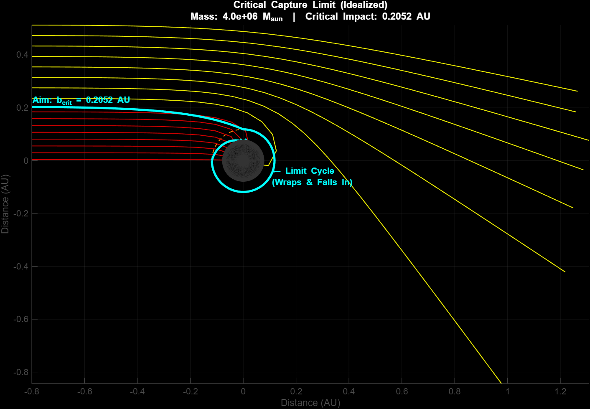

Featured Aerospace
UCI CubeSat Structures
Student spacecraft structural analysis with static and modal simulation deliverables.
ANSYS
Structures
Modal
Open project
UC Irvine | Aerospace Engineering Student
Spacecraft structures, mission analysis, controls, simulation, MATLAB and Python work, and hands-on mechanical execution — all gathered here as a recruiter-ready portfolio.
Featured Aerospace
Student spacecraft structural analysis with static and modal simulation deliverables.
Featured Mission Analysis
Earth-to-Didymos transfer analysis with orbital propagation, Lambert solving, and porkchop plotting.
Featured Controls
PID controller design and robotics verification work from MAE 106.
Fast Links
Resume, project archive, and direct links to core technical work.
Overview of coursework, experience, and project direction.
Open resumeAll project entries, reports, videos, notebooks, and source files.
Open archiveDirect link to the Didymos mission-analysis report.
Open reportPrimary contact point for internships, research, and engineering roles.
Open LinkedInProject Previews
Short previews for the projects most likely to matter during a recruiter or hiring-manager pass.
Structural analysis on a student spacecraft component with static and modal simulation outputs.
% Mission to Didymos
rv_earth_dep = propagate_elliptical(rv_earth_ref, t_earth, MU);
rv_didymos_arr = propagate_elliptical(rv_didymos_ref, t_didymos, MU);
[v1_trans, v2_trans, ~] = lambert_universal( ...
r1_nom, r2_nom, tof_nom, MU, 0, 1e-8, 1e-8);
dV_tot_nom = norm(v1_trans - v1_earth) ...
+ norm(v2_trans - v2_didymos);Earth-to-Didymos transfer analysis using orbital propagation, Lambert solving, and porkchop plots.

Computational physics model showing photon capture, escape, and critical trajectories near a black hole.
Installation and troubleshooting work across suspension, braking, lighting, tuning, and related upgrades.
Contact
LinkedIn is the primary contact point for portfolio follow-up, project questions, and recruiting outreach.
Spacecraft structures, controls, mission analysis, simulation, technical writing, and hands-on engineering support.
CubeSat Structures, MAE 146 Mission to Didymos, MAE 106 PID Controller Design, and the resume PDF.
{kind=link}